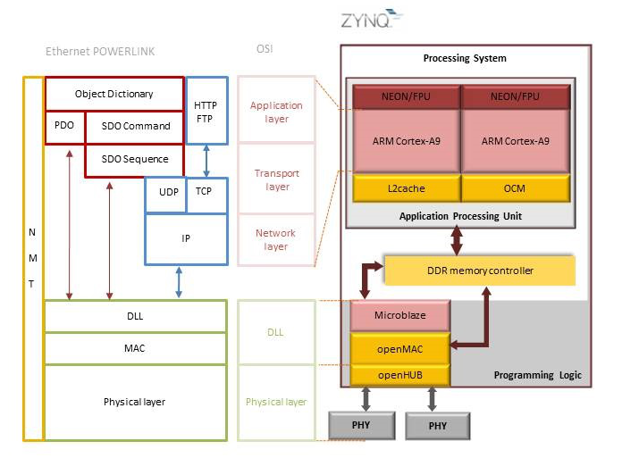

openPOWERLINK on Xilinx Zynq SoC Hardware Master
The openPOWERLINK master stack on Xilinx Zynq is executed in a bare metal environment. Here the time critical network support layers of openPOWERLINK run as a stand alone driver application on Microblaze softcore processor in the programming logic (PL). The user support library along with a demo master application run on one ARM Cortex A9 Core 0 in the Zynq processing system (PS). The two applications (demo master and driver) use a fast shared memory interface on DDR3 for data exchange. The design uses AVNET ISM Networking FMC Module with openMAC support to provide Ethernet PHY connection for the programming logic (PL) in Xilinx Zynq SoC.

1. Hardware requirements
The hardware items required to run openPOWERLINK Hardware MN demo on Zynq ZC702 are as follows:
-
1 Zynq ZC702 board to act as the openPOWERLINK Master
-
1 Linux development PC
-
2 Linux PC to act as the openPOWERLINK Slave
-
1 Micro SD Card Reader
-
1 Micro SD Card
-
4 Ethernet Cables
-
1 AVNET ISM Networking FMC Module
-
1 Network switch or hub
-
1 Mini USB serial cable
2. Software requirements
Following are the software packages and its dependencies to be downloaded to run openPOWERLINK Hardware Master demo on Zynq ZC702.
-
Ubuntu 12.04/14.04
-
Xilinx ISE Design Suite v14.7 - click here
3. Download the pre-built binaries
-
To download the pre-built binaries - click here
4. Run openPOWERLINK master demo application on Xilinx Zynq ZC702 SoC
This section describes the steps to be carried out to run openPOWERLINK Hardware MN demo on Xilinx Zynq ZC702 SoC.
-
Copy the following files into the SD card
-
BOOT.BIN
-
mnobd.cdc configuration file
-
Connect the USB-to-miniUSB cable from development PC to board connector USB UART(J17)
-
Insert the SD card into Zynq ZC702 Master Board and power up the board
-
Connect the AVNET ISM Networking FMC Module to the local network, this provides the ethernet PHY connection for the PL in Xilinx Zynq SoC
-
Open a terminal program
-
Install Minicom using the command:
-
sudo apt-get install minicom
-
Run Minicom using the command:
-
sudo minicom -s
-
Go to serial port set up
-
Set Serial device as /dev/ttyUSB0
-
Set Hardware Flow Control to NO
-
Save the setup
-
Now the openPOWERLINK MN log can be viewed in the serial terminal
5. Run openPOWERLINK slave demo application on Linux PC
This section describes the steps to be carried out to run openPOWERLINK Linux CN demo.
-
Open a new terminal on the Linux PC to run openPOWERLINK slave
-
Change to the driver daemon directory on slave PC
-
cd <path to driver application> (Path: /openPOWERLINK_Zynq_Bare_metal/Linux_CN1/oplk_bin/oplkd-pcap/)
-
Run the PCAP driver daemon using the following command:
-
sudo ./oplkcnd-pcap
-
Open another terminal
-
Change to the slave application directory on slave PC
-
cd <path to slave application> (Path: /openPOWERLINK_Zynq_Bare_metal/Linux_CN1/oplk_bin/demo_cn_console/)
-
Run the slave application using following command:
-
sudo ./demo_cn_console
-
Repeat the openPOWERLINK slave demo application steps on the slave 2 (CN32) Linux PC.